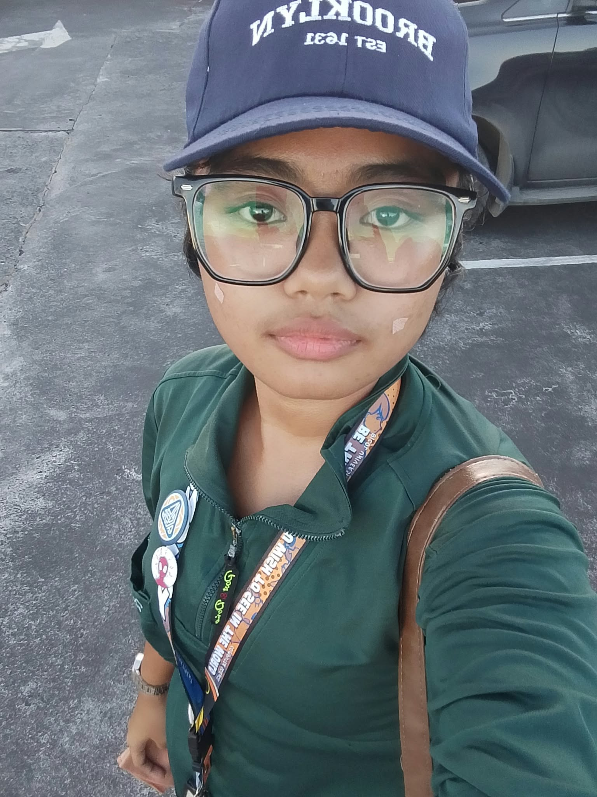
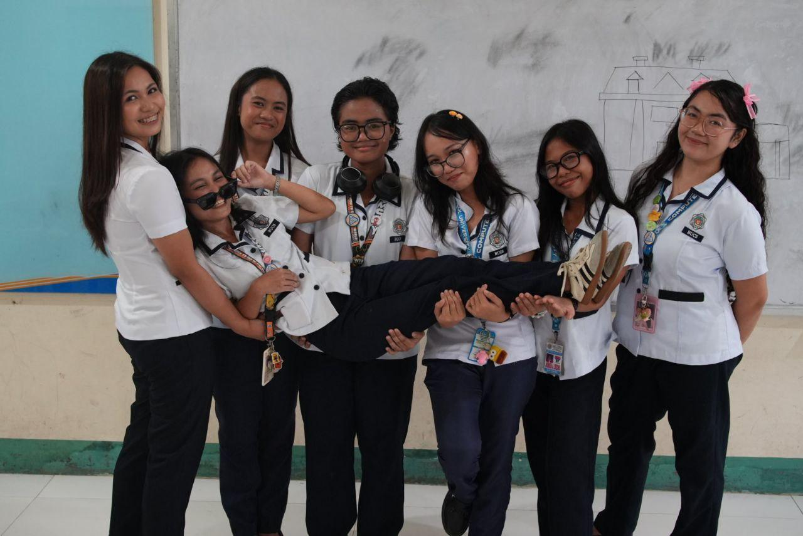
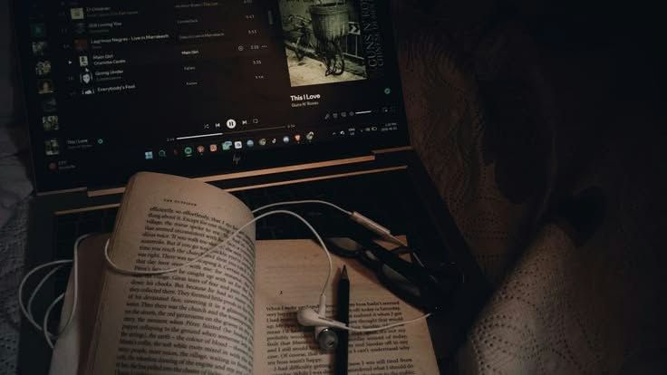

Just a small collection of things about me—what catches my interest, how I spend my days, and the path I'm figuring out along the way.
Yow
Hey, guys! I am Rannah, "Ranz" for short. I am a first-year BSCS student at Bicol University, and I'm a movie-loving, music-listening go-with-the-flow kind of person who is learning to code one page at a time.
"I am rooted, but I flow."
— Virginia Woolf
Personal Lore
"I can't go on. I'll go on."
— Samuel Beckett, The Unnamable
Likes & Fixations
- Listening to music
- Watching movies, films, series, and shows
- Reading
- Writing
- Jogging on a fine day
- Doing nothing but thinking
The Daily Grind
A typical day for me usually starts around 3 AM. I prepare my usual breakfast—oatmeal and coffee—then go through my previous lectures, if I happen to feel like it. Otherwise, I just find myself staring into nothingness, letting time pass. Eventually, I get ready for uni, sometimes running purely on instinct. After classes, I lie down for a while before getting back to reviewing. And just like that, the day usually ends with me back in bed, doing it all over again.
Into the Digital
My path into computing wasn't planned. I chose Computer Science at the very last minute, and by the time I filled out my BUCET application it had become my first choice. I'm still discovering which part of computing I'll love most, but I'm excited to find out. Right now, I want to build real things, learn from every mistake, and enjoy a successful and lively journey through my college years and the years ahead of me.

Soundtrack
My go-to playlist, "can you see me I'm waiting for the right time..." by Junyour. Listen on Spotify.
My favs:
- Bags by Clairo
- Unti-unti by Up Dharma Down
- Last Night on Earth by Green Day
Curated Interests
One website I will never get over is Letterboxd, because I love movies and films. A few more things I'm into:
| Category | Top Picks |
|---|---|
| Apps | Spotify, Netflix, HBO, TikTok |
| Books | "The Space Between Worlds" by Micaiah Johnson and "This Is How You Lose the Time War" by Amal El-Mohtar & Max Gladstone |
| Musicians | Keshi, Wale the Sage, Clairo, Valley, Wallows, Chase Atlantic and many more |
| Movies / series / film | "Guardians of the Galaxy Vol. 3", "Portrait of a Lady on Fire" and "The 100" |

Targets
- Make friends in college and study hard enough to graduate.
- Find a stable job that is suitable for me, start saving up, and invest in important things and for my parents.
- Start traveling, have a lifestyle, and live life while I can.
Afterthoughts
Building this page taught me that a website is really just organized content. Before adding any color, I had to decide what each part of the page was: a header, a navigation bar, sections, a table, a footer. Using the right HTML tags made the page easier to read, easier to style, and easier to fix when something broke. I also learned that CSS is what gives the page its personality, and that Grid lets me place sections side by side without fighting the browser.
Compared to my first About Me activity, this version is better organized. I moved my hobbies and goals into their own sections, fixed my typos, added a stylesheet, and made the page work on small screens. Next time, I want to try more creative layouts and write my code with fewer shortcuts.